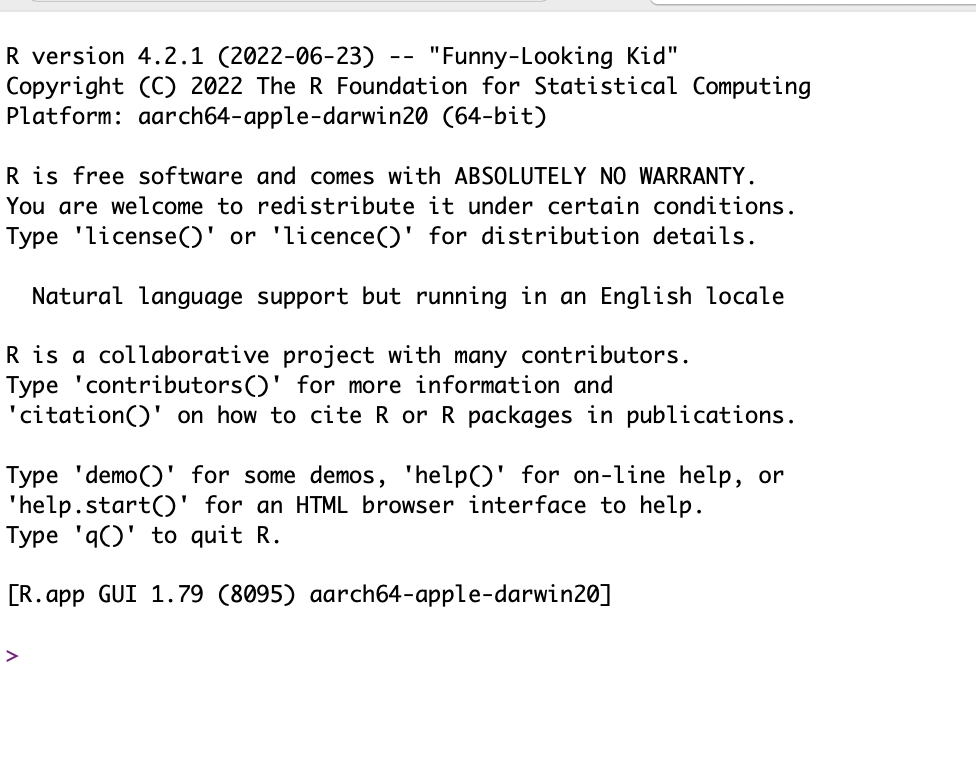
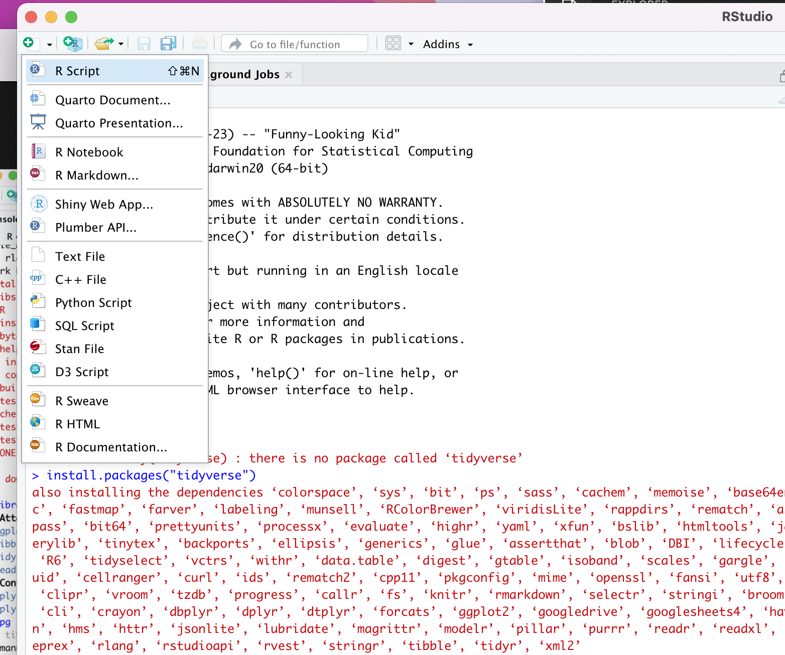
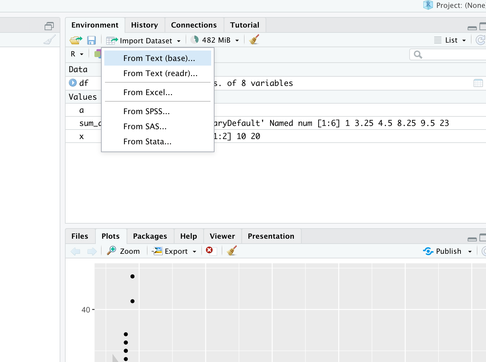

- Learn how to create pictures of data
- R and ggplot mostly
- Typing out the codes, instead of copy and paste
- Let's open up R

- Everything works through a command line
- console
- > connects you and machine
- interpret your instruction and gives you output to the console
- Many write codes in a text file and send it to R
- use any text editor to write .r script
- Rstudio is an IDE: integrated development environment
- independent application from R
- It collects various elements in R to help your work

install.packages("tidyverse")
Make sure: library(tidyverse)
Introduction to R
- In R, everything has a name
- variables, data, functions, libraries
- You cannot use some names
- reserved words: FALSE, TRUE, Inf, for, else, NA
- You can use some names, but strongly discouraged
- common functions: mean, range
- Names in R are case-sensitive
- lower_case_without_a_space
- Data structures are essential concepts in programming
- efficient data storage and operations rely on them
- Vector, Matrix, Lists, Dataframe
- Vector: one-dimensional structure for storing values of SAME TYPE
- The notion of vector is close to that of arrays in other languages such as Python
df <- c(1,23,4,5)
df <- c(1,23,4,5)
A vector is created by the function c()(concatenate)
- This function receives a sequence of values of the SAME TYPE separated by a comma
<- is an assigment operator
() are what allows you to send information to the function
Most functions accept one or more arguments
the function executes the instruction using the arguments
mean()
Error in mean.default() : argument "x" is missing, with no default
Try again
mean(x = df)
mean(df)
Function arguments have names internally (x), you don't need to specify
- if you omit the name of arguments, R assume in a default order
- = is used when providing arguemtns to a function
Think about this
df <- c(1,23,4,5)
table(df)
sd(df)
df + 1
df * 10
df + df
You will use class() quite often
class(df)
sum_df <- summary(df)
class(sum_df)
class(summary)
Think about what these codes are doing
df
dataframe will be your close friend
df <- anscombe
class(df)
df$x1
more friends
- You will see tibble a lot
- tidyverse libraries make it popular
- Like data frames, they store vraibles of different classes in a single table
- more friendly
df_tibble <- as_tibble(df)
df_tibble
What's the difference?
Some tips
- Make sure parentheses are balanced
need to check proper opening "(" and closing ")"
- Complete your expressions
you will see + in the console
- R Studio will help your coding
watch out auto completion
Read your data
- How to read data in excel?

- Not bad, actually
- You need to check the data format and location of data
library(readr)
The readr package is part of the tidyverse collection of packages
It is used to import a dataset in R
df <- read_csv("filename.csv")
Creat a figure
install.packages("gapminder")
library(gapminder)
gapminder
first_plot <- ggplot(data = gapminder,
mapping = aes(x = gdpPercap, y = lifeExp)) + geom_point()
Creat a figure
install.packages("gapminder")
library(gapminder)
gapminder
first_plot <- ggplot(data = gapminder,
mapping = aes(x = gdpPercap, y = lifeExp)) + geom_point()